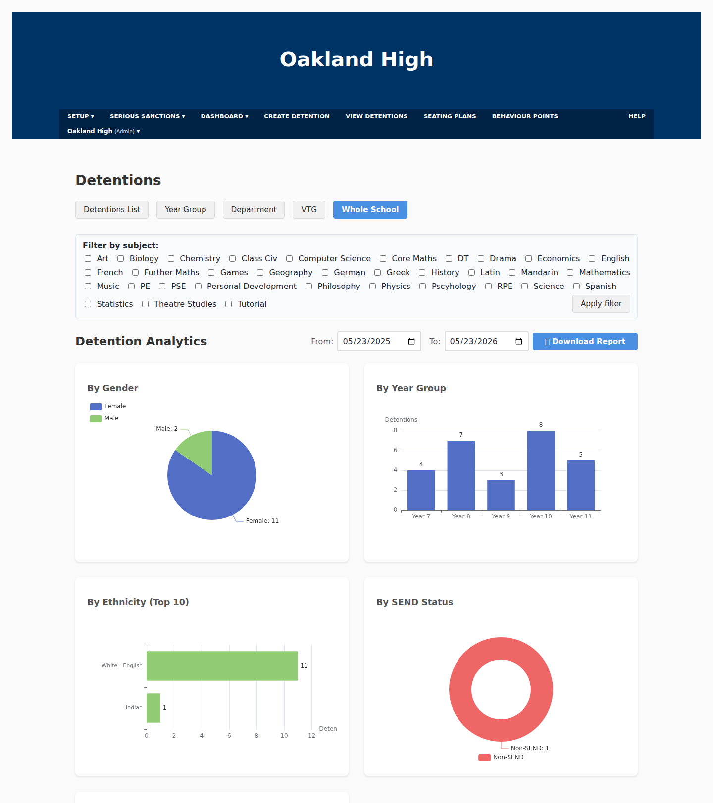
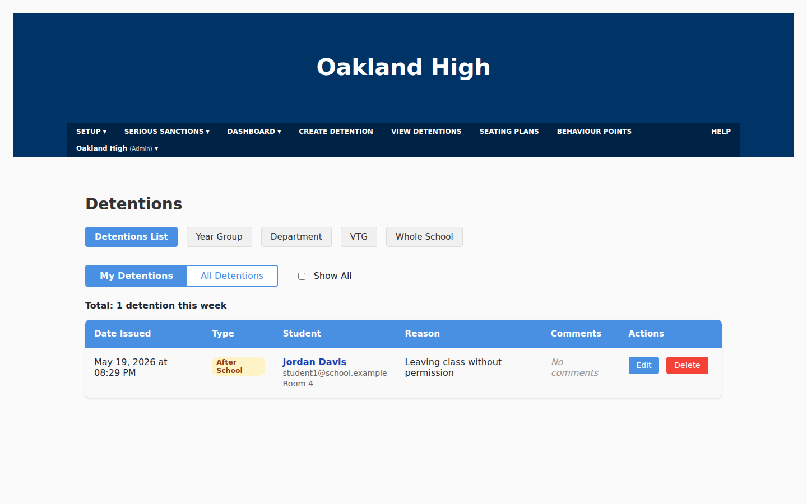
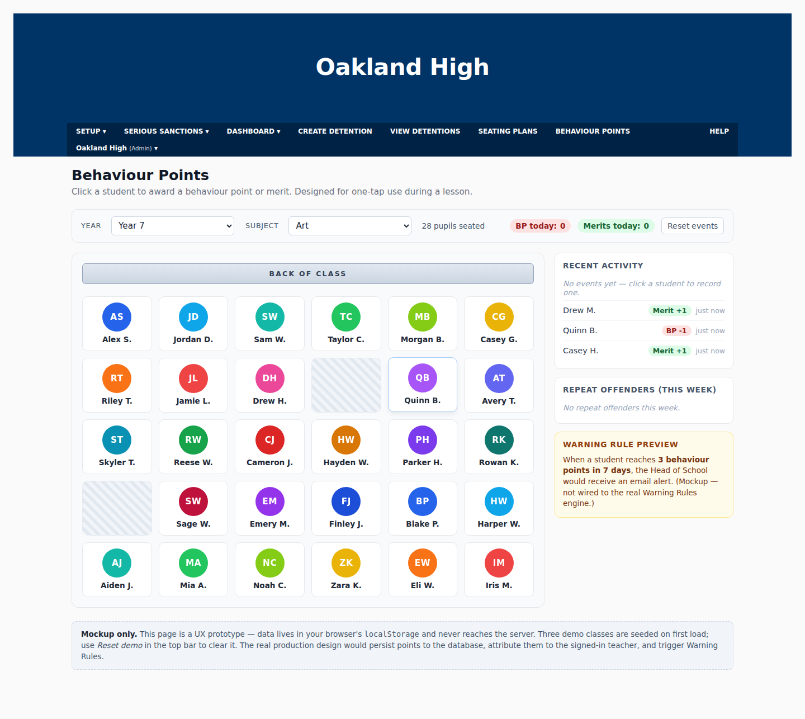
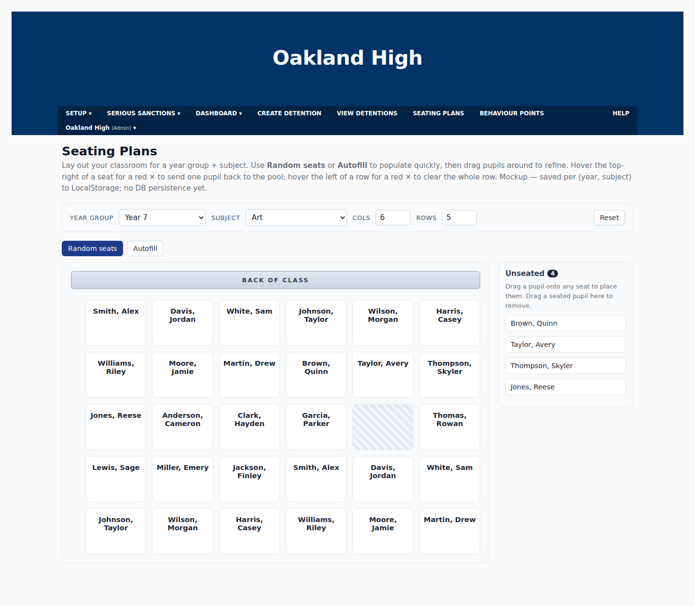
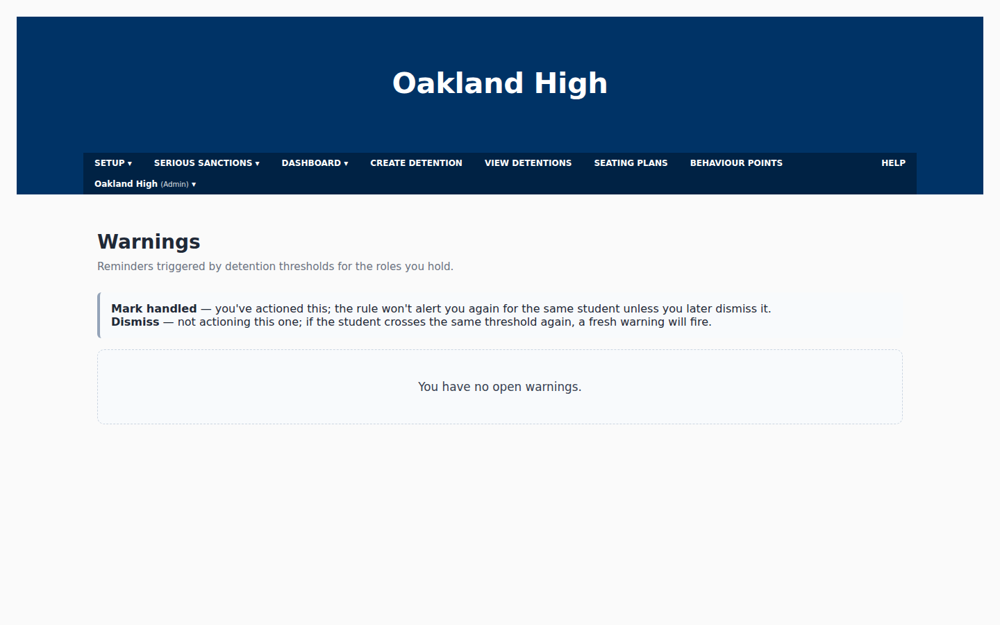
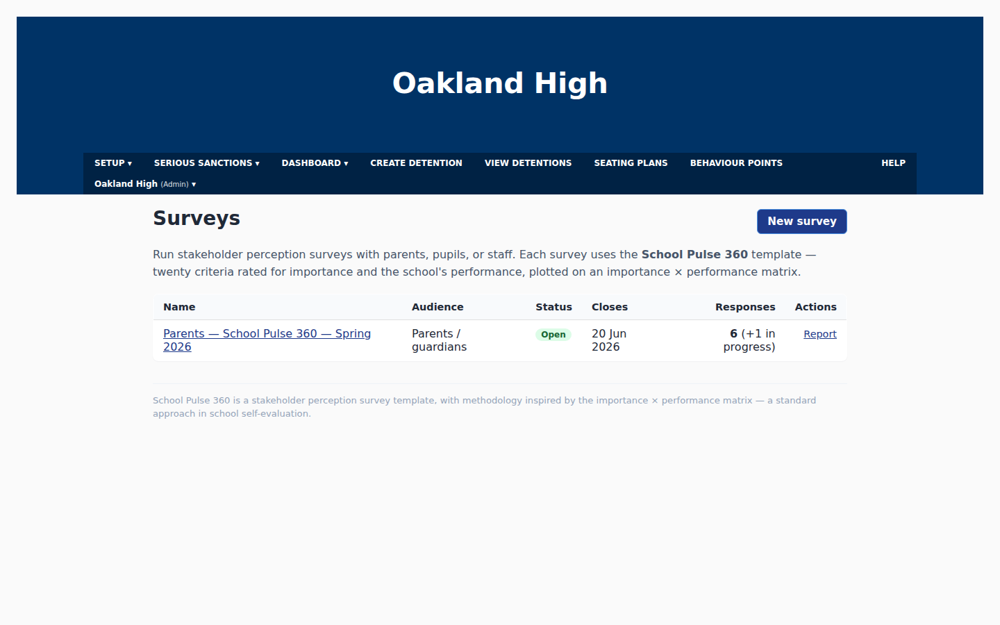
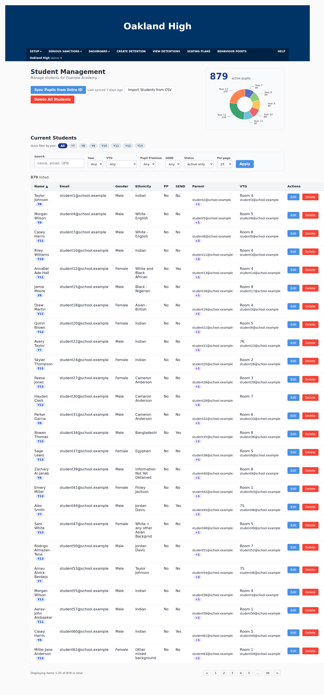
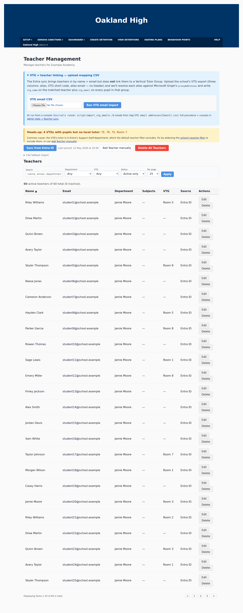

School Dashboard replaces the patchwork of spreadsheets, disconnected systems and uncustomisable software used to track everyday life in school. Log a detention quickly, award a behaviour point from a seating plan, send parents a branded email - and see whole-school analytics broken down by year group, gender, SEND and disadvantaged status. Whatever you need to track, School Dashboard can help.

Seating Plans, Behaviour Points, Inclusion and more - each one a module that shares the same student roster, staff list and audit trail. And the modules can talk to each other. Switch on what your school needs, with no cluttered menus of what you don't, and only pay for that.
Log, view and report detentions by year group, department, VTG or whole school. Notify parents by email.
One-tap point or merit during a lesson. Create warning rules and escalation policies to follow up effectively.
Drag-and-drop layouts per class with auto-seat. The seating plan IS the behaviour interface. See your SEND or disadvantaged pupils at a glance.
Fits your school's behaviour policy. Define rules - "3 lunchtime detentions in 5 days" - that escalate to Heads of Year automatically.
School Pulse 360 - see what students, parents and staff think of your school. Use the built-in AI to ask questions and find trends in your data.
Detentions broken down by year group, department, gender, ethnicity, SEND status and disadvantaged status - at a glance.
Ofsted-aligned dashboard for PP, SEND, LAC and FSM cohorts - outcomes and gaps in one place.
Pick a student, pick a reason from your school's preset list, choose the type - break, after school, Saturday - and you're done. Filter by Year Group, Department, VTG or Whole School. Export to PDF or CSV for leadership meetings.

Behaviour Points are designed for the cognitive load of a real classroom teacher - one screen, one tap, no menus. Awards are timestamped to the teacher and lesson. When a student crosses a Warning Rule threshold, the system emails the Head of Year automatically.

Lay out your classroom for any year-group/subject combination. Use Random seats or Autofill to populate quickly, then drag pupils around to refine. Tap a seat to award a behaviour point or merit on the spot.

Add in the rules your pastoral team already follows - "3 behaviour points in 5 days notifies the Tutor", "5 points in 5 days notifies the Head of Year". The dashboard watches every event and emails the right person at the right moment.

Run Kirkland-Rowell-style stakeholder perception surveys with parents, staff and students. Each question is scored twice - importance and performance - and plotted on a quadrant chart that immediately shows where to focus.

Open the Whole School view and the dashboard plots detentions by gender, year group, ethnicity, SEND status, disadvantaged status and category - instantly. No pivot tables, no exporting to Excel.


Regular API syncs with your MIS (SIMS, Bromcom). Ethnicity, year group, VTG and SEND fields are first-class - feeding straight into inclusion reporting.
One-click sync from Microsoft Entra ID. New starters appear; leavers go inactive automatically.
Staff sign in with their existing school accounts.
Student and staff data is stored in the UK/EEA, encrypted at rest, ringfenced per school, and covered by a standard data-processing agreement.
The built-in AI works on your data to answer questions and spot trends - but your school's data is never used to train AI models.
Integration with all the usual data sources - Microsoft Entra, SIMS, Bromcom and the rest.
Head of School, Head of Year, Deputy Head, Head of Department, Teacher, Cover Supervisor - with policies that mirror who's actually allowed to see what.
Every detention create, update and delete is recorded with user, school and changed fields.
Upload your logo and header colour. Parent emails go out under your school's identity, not ours.
We'll spin up a tenant pre-loaded with a sample of your staff and pupils, and walk your leadership team through every module in 30 minutes.
hello@schooldashboard.uk